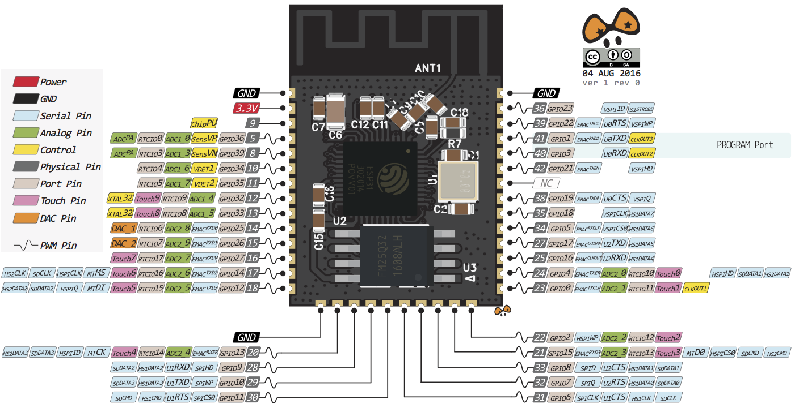
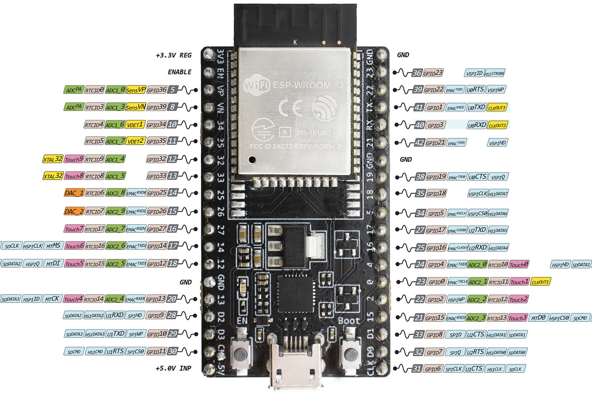
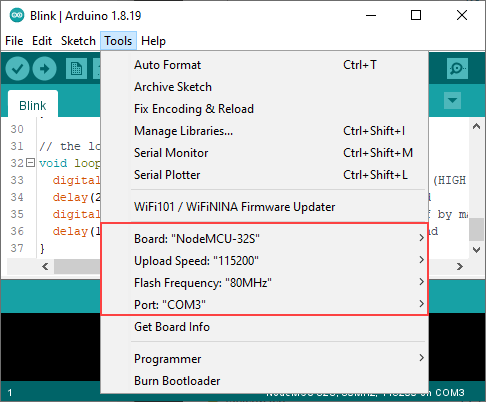
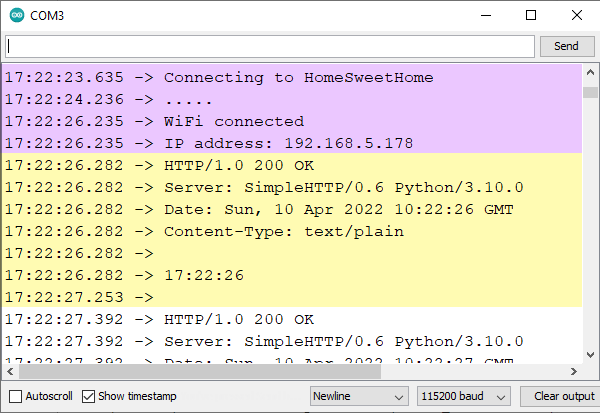

Created by Espressif Systems, ESP32 is a low-cost, low-power system on a chip (SoC) series with Wi-Fi & dual-mode Bluetooth capabilities. ESP32 is highly integrated with built-in antenna switches, RF balun, power amplifier, low-noise receive amplifier, filters, and power management modules. They are engineered for mobile devices, wearable electronics and IoT applications.
The ESP32 chip comes with 48 pins with multiple functions. Not all pins are exposed in all ESP32 development boards, and some pins cannot be used.
The ESP32 is divided by family:
ESP32: WiFi and BLE
ESP32-S: WiFi only
ESP32-C: WiFi and BLE 5
It’s better to start with a dev board having embedded USB-to-Serial port. Please buy a good quality board, and it should be well known, and breadboard-friendly.
ESP32 Pinout
NodeMCU-32S Devkit V4
GPIOs
All GPIOs can be configured as interrupts.
GPIO 6 to GPIO 11 are exposed in some ESP32 development boards. However, these pins are connected to the integrated SPI flash on the ESP-WROOM-32 chip and are not recommended for other uses.
Some GPIOs change their state to HIGH or output PWM signals at boot or reset: GPIO 1,3,5, 6-11,14,15.
Enable (EN) is the 3.3 V regulator’s enable pin. It’s pulled up, so connect to ground to disable the 3.3 V regulator. This means that you can use this pin connected to a pushbutton to restart your ESP32, for example.
The absolute maximum current drawn per GPIO is 40 mA according to the “Recommended Operating Conditions” section in the ESP32 datasheet.
Capacitive touch GPIOs
The ESP32 has 10 internal capacitive touch sensors on GPIO 0,2,4,12-15,27,32,33. These can sense variations in anything that holds an electrical charge, like the human skin. So they can detect variations induced when touching the GPIOs with a finger. These pins can be easily integrated into capacitive pads and replace mechanical buttons.
Analog to Digital Converter
The ESP32 has 18 x 12 bits ADC input channels. ADC2 pins cannot be used when Wi-Fi is used. The ESP32 ADC pins don’t have a linear behavior. You probably won’t be able to distinguish between 0 and 0.1 V, or between 3.2 and 3.3 V.
Digital to Analog Converter
There are 2 x 8 bits DAC channels on the ESP32 to convert digital signals into analog voltage signal outputs.
PWM
The ESP32 LED PWM controller has 16 independent channels that can be configured to generate PWM signals with different properties. All pins that can act as outputs can be used as PWM pins (GPIOs 34 to 39 can’t generate PWM).
I2C
The ESP32 has two I2C channels and any pin can be set as SDA or SCL. SPI0 can be used to access to the external storage unit as a fast cache. SPI1 can be used as the Master host. SPI2, SPI3 can be used as both Master and Slave.
SPI
ESP32 has 4 SPI controllers. They are SPI0, SPI1, SPI2, SPI3.
SPI0 and SPI1 share one BUS prefixed with “SPI”, they consist of signals “D, Q, CS0 ~ CS2, CLK, WP, HD”, and they are not exposed to user.
SPI flash integrated (SPI0, SPI1): GPIOs 34 to 39 are GPIs – input only pins. These pins don’t have internal pull-up or pull-down resistors. They can’t be used as outputs, so use these pins only as inputs
SPI2 and SPI3 use BUS prefixed with “HSPI” and “VSPI” respectively, and they are accessible from user.
Hall Effect Sensor
The ESP32 also features a built-in hall effect sensor that detects changes in the magnetic field in its surroundings.
Go to Tools → Board → Board Manager and search for esp32, then install it.
Download Board Support Packages (BSP)
Example: Blink
Go to Files → Examples → 01. Basics → Blink to create a new sketch:
Blink the built-in LED every second
// the setup function runs once when you press reset or power the boardvoidsetup(){// initialize digital pin LED_BUILTIN as an output.pinMode(LED_BUILTIN,OUTPUT);}// the loop function runs over and over again forevervoidloop(){// turn the LED on (HIGH is the voltage level)digitalWrite(LED_BUILTIN,HIGH);delay(500);// turn the LED off by making the voltage LOWdigitalWrite(LED_BUILTIN,LOW);delay(500);}
Select target board
Go to Tools, then under Board → ESP32 Arduino, select your target board, for example, NodeMCU-32S.
You also have to select the COM port, baudrate, and Flash frequency.
Select ModeMCU-32S as the target board
Flash and Run
Press Upload to compile and download program to the target board. Press EN button to reset the board and check the user LED.
Fix: Failed to connect to ESP32: Timed out waiting for packet header
Some ESP32 development boards don’t go into flashing/uploading mode automatically when uploading a new code, therefore, you have to Hold the BOOT/FLASH button while uploading programm.
Another way to make your board go into uploading mode automatically is to connect a 10 uF electrolytic capacitor between the EN pin and GND.
Arduino has built-in Serial object that can be used to communicate with the board through the default UART0 port on the target board.
Most of ESP32 Boards has mapped the primary UART0 port to the USB-to-COM chip, therefore, you can easily use the Serial function without any additional board.
The below example show how to initialize the Serial port and interact with user input:
Display a message and read a number
voidsetup(){// start Serial portSerial.begin(115200);while(!Serial){;// wait for serial port to connect. Needed for native USB}}voidloop(){// print a messageSerial.print("Enter a number: ");// wait for user inputwhile(!Serial.available())delay(10);// read user input, convert it to a numberintnum=Serial.parseInt();// look for the newline (enter) character// if found, feedback a messageif(Serial.read()=='\n'){Serial.print("You entered ");Serial.print(num);Serial.println();}}
Flash the program, and open Serial Monitor from Arduino Tools, then you can enter a number to test the application:
The LED control (LEDC) peripheral is primarly designed to control the intensity of LEDs, although it can also be used to generate PWM signals for other purposes.
APIs included:
/* set up */doubleledcSetup(uint8_tchannel,doublefreq,uint8_tresolution_bits);doubleledcChangeFrequency(uint8_tchan,doublefreq,uint8_tbit_num);/* pin */voidledcAttachPin(uint8_tpin,uint8_tchan);voidledcDetachPin(uint8_tpin);/* write/read */voidledcWrite(uint8_tchan,uint32_tduty);uint32_tledcRead(uint8_tchan);// return dutydoubleledcReadFreq(uint8_tchan);doubleledcWriteTone(uint8_tchan,doublefreq);// at 50% PWMdoubleledcWriteNote(uint8_tchan,note_tnote,uint8_toctave);
Return current time in format "%H:%M:%S" for each request /time
#!/usr/bin/env python3importsocketimportdatetimeimporthttp.serverclassExampleHTTPHandler(http.server.SimpleHTTPRequestHandler):defdo_GET(self):ifself.path=='/time':self.send_response(200)self.send_header('Content-Type','text/plain')self.end_headers()# get current timenow=datetime.datetime.now().strftime("%H:%M:%S")self.wfile.write(now.encode())self.wfile.write(b'\r\n')else:# fallback to default handlersuper().do_GET()defmain():print("IP Addresses:")foriinsocket.getaddrinfo(socket.gethostname(),None):print(i[4][0])# Run webserver on localhost:80server_address=('',80)# using multithread and ExampleHTTPHandlerhttpd=http.server.ThreadingHTTPServer(server_address,ExampleHTTPHandler)print("Server starts")httpd.serve_forever()if__name__=="__main__":main()
Example of WiFi Web Client:
Request to URI /time on the Web Server at host:port
Print out lines of Web Server’s response
Note: This example is not optimized (re-create clients in the loop)
#include<WiFi.h>// Set these to your desired credentials.constchar*ssid="HomeSweetHome";constchar*password="password";// URIconstchar*host="192.168.5.94";constintport=80;constchar*request_time="/time";voidsetup(){Serial.begin(115200);Serial.println();Serial.print("Connecting to ");Serial.println(ssid);// connect to the WiFiWiFi.begin(ssid,password);while(WiFi.status()!=WL_CONNECTED){delay(500);Serial.print(".");}Serial.println("");Serial.println("WiFi connected");Serial.print("IP address: ");Serial.println(WiFi.localIP());}voidloop(){// Create a clientWiFiClientclient;// connect to the host using TCPif(!client.connect(host,port)){Serial.println("HTTP connection failed");return;}// send GET request to HTTP Webserverclient.print("GET "+String(request_time)+" HTTP/1.1\r\n"+"Host: "+String(host)+"\r\n"+"Connection: close\r\n"+"\r\n");// wait for response in 5sunsignedlongtimeout=millis();while(client.available()==0){if(millis()-timeout>5000){Serial.println(">>> Client Timeout !");client.stop();return;}}//// Read all the lines of the reply from server and print them to Serialwhile(client.available()){Stringline=client.readStringUntil('\r');Serial.print(line);}Serial.println();}
Output console of a client when requesting /time
constchar*ssid="ESP32-AP";constchar*password="password";voidsetup(){// start the Access PointWiFi.softAP(ssid,password);// get local IPIPAddressmyIP=WiFi.softAPIP();}
Run a Web Server
WiFiServerserver(80);voidsetup(){// after run the Access Pointserver.begin();}voidloop(){// listen for incoming clientsWiFiClientclient=server.available();if(client){while(client.connected()){if(client.available()){// read data from clientcharc=client.read();}}client.stop();}}
Example of processing user request to change webpage’s background color:
Web Server listens to user requests in format GET /<action>,
corresponding to URLs in format <WebServerIP>/<action>
The action could be red or green as the selected color, other actions will clear the color
Show buttons for user to select
#include<WiFi.h>#include<WiFiClient.h>#include<WiFiAP.h>// Set these to your desired credentials.constchar*ssid="ESP32-AP";constchar*password="password";// Run a webser at port 80WiFiServerserver(80);// A sample webpage show a solid background colorenumBG_COLOR{NONE,RED,GREEN};BG_COLORbg_color=NONE;constchar*red="red";constchar*green="green";constchar*none="initial";constchar*get_bg_color(){switch(bg_color){caseRED:returnred;caseGREEN:returngreen;default:returnnone;}}voidsend_response(WiFiClient*client){// send Header with OK responseclient->println("HTTP/1.1 200 OK\n""Content-type:text/html\n");// send Contentclient->println("<html>""<body ""style=\"""background-color:"+String(get_bg_color())+";""text-align:center;""\">""<a href=\"/\"><button>NONE</a></button>""<a href=\"/red\"><button>RED</a></button>""<a href=\"/green\"><button>GREEN</a></button>""</body>""</html>");}voidsetup(){Serial.begin(115200);Serial.println();Serial.println("Configuring access point...");// You can remove the password parameter if you want the AP to be open.WiFi.softAP(ssid,password);// Show AP addressIPAddressmyIP=WiFi.softAPIP();Serial.print("AP IP address: ");Serial.println(myIP);// Start Web Serverserver.begin();Serial.println("Server started");}voidloop(){// listen for incoming clientsWiFiClientclient=server.available();if(client){Serial.println("New Client.");// string to hold client HTTP requestStringclientString="";while(client.connected()){if(client.available()){charc=client.read();//Serial.write(c);// newline char means end of stringif(c=='\n'){// if the current line is blank, you got two newline characters in a row.// that's the end of the client HTTP request, so send a response:if(clientString.length()==0){send_response(&client);// break out of the while loop:break;}else{// if you got a newline, then process the completed stringSerial.println(clientString);// Check to see if the client request was "GET /red" or "GET /green":if(clientString.startsWith("GET /red ")){Serial.println("RED");bg_color=RED;}elseif(clientString.startsWith("GET /green ")){Serial.println("GREEN");bg_color=GREEN;}elseif(clientString.startsWith("GET / ")){Serial.println("NONE");bg_color=NONE;}clientString="";}}elseif(c!='\r'){// if you got anything else but a carriage return character,clientString+=c;// add it to the end of the currentLine}}}// close the connection:client.stop();Serial.println("Client Disconnected.");}}
The Preferences library is unique to arduino-esp32. It should be considered as the replacement for the Arduino EEPROM library.
It uses a portion of the on-board non-volatile memory (NVS) of the ESP32 to store data. This data is retained across restarts and loss of power events to the system.
Preferences works best for storing many small values, rather than a few large values. If large amounts of data are to be stored, consider using a file system library such as LitteFS.
In the Arduino implementation of Preferences, there is no method of completely removing a namespace. As a result, over the course of several projects, the ESP32 non-volatile storage (nvs) Preferences partition may become full. To completely erase and reformat the NVS memory used by Preferences, create a sketch that contains:
#include<nvs_flash.h>voidsetup(){nvs_flash_erase();// erase the NVS partition and...nvs_flash_init();// initialize the NVS partition.}voidloop(){}
Example to save username/password:
If no user found, add a new user
If an user exists, prompt for the password
If the password is correct, allow changing user
If password is incorrect 3 times, lock the machine
#include<Preferences.h>Preferencespreferences;#define NS_ACCOUNT "account"#define KEY_USER "user"#define KEY_PASSWD "passwd"/* account { user: XXX passwd: YYY }*/Stringuser;Stringpasswd;Stringpasswd2;voidinput(String&prompt,String&str){str="";Serial.print(prompt);while(str==""){str=Serial.readString();}Serial.println(str);}voidaddUser(){while(true){Stringprompt="Enter Username: ";input(prompt,user);prompt="Enter Password: ";input(prompt,passwd);prompt="Retry Password: ";input(prompt,passwd2);if(passwd==passwd2){intr=-1;Serial.println("Save new account: "+user+" / "+passwd);r=preferences.putString(KEY_USER,user);if(r==0)Serial.println("Can NOT user!");r=preferences.putString(KEY_PASSWD,passwd);if(r==0)Serial.println("Can NOT passwd!");preferences.end();delay(1000);ESP.restart();}}}voidaskPassword(){Serial.println("Welcome "+user+"!");passwd=preferences.getString(KEY_PASSWD);inttrial=3;Stringprompt="Enter Password: ";while(trial>0){input(prompt,passwd2);trial--;if(passwd==passwd2){break;}}if(trial>0){Serial.println("Logged in! You can change user!");addUser();}else{Serial.println("LOCKED!");while(true){}}}voidsetup(){Serial.begin(115200);while(!Serial){}// open namespace NS_ACCOUNT with readOnly = falsepreferences.begin(NS_ACCOUNT,false);user=preferences.getString(KEY_USER);if(user==""){Serial.println("No user found!");addUser();}else{askPassword();}}voidloop(){delay(1000);}